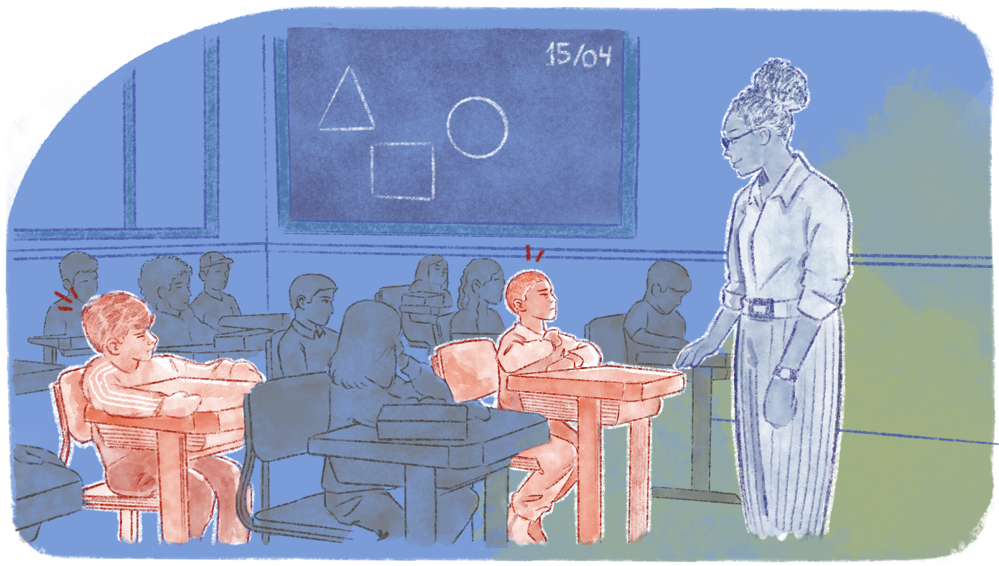

A diversidade como vantagem pedagógica na escola
A diversidade sempre existiu e sempre esteve acompanhada por seus conflitos e tensões na escola. É fato que não estamos tratando de um “tema novo”, mas é inegável que temos novas abordagens sobre a questão da diversidade. A presença de conflitos eclode nas demandas que perpassam as práticas pedagógicas, a formação de toda equipe escolar, o currículo, entre outros elementos. Assim, é algo que está no “chão da escola” e que tem desafiado cada vez mais a gestão a enfrentar a cultura escolar que prioriza o comum, o uniforme, o homogêneo.

Título: A escola homogênea
Fonte: Prosa (2025i).
A escola costuma preparar-se para o “aluno médio”, aquele aluno definido por características gerais de uma etapa da vida. O currículo, a arquitetura, os tempos escolares, tudo é organizado tendo em vista estudantes que chegam com determinadas condições, tanto cognitivas quanto econômicas e culturais. Mas o horário de começo das aulas, por exemplo, leva em conta estudantes que dependem de mais de um transporte público? Ou, ainda, o currículo leva em conta estudantes que chegam à EPT com dificuldades em alguns conceitos e conteúdos? E os trabalhos escolares que exigem pesquisa, uso de computadores, levam em conta que nem todos estudantes têm acesso às ferramentas tecnológicas? O aluno que não atende ao padrão é enxergado como aquele que tem déficit para acompanhar a escola. Ele encontra dificuldades para atender às exigências que a escola faz e para as diferenças que ela ignora. E se temos adesão ao fato de que não basta uma legislação existir para que as políticas que atendem às diferenças sejam consolidadas, precisamos pensar a respeito de como tratamos a diversidade no dia a dia da escola.
É muito comum ouvir “todos somos iguais”, mas, na verdade, somos todos diferentes. Pensar que somos iguais favorece a manutenção de uma escola que valoriza a cultura hegemônica que, no caso da EPT, acaba por sustentar a formação para atendimento de um mercado de trabalho que se mostra excludente pela classe, pela raça, pelo gênero e pelas condições físicas e cognitivas das pessoas. As diferenças, vistas como realidades sócio-históricas pelas quais os grupos humanos organizam suas dinâmicas, são atravessadas por relações de poder. Assim, por este lado, temos a necessidade de reconhecer as diferenças e combater toda e qualquer forma de tornar os sujeitos da diversidade alvos de discriminação e transformar suas diferenças em produtoras de desigualdades.
Por isso, na educação, a discussão de como lidar com o multiculturalismo é pauta para avaliar como as diferenças são tratadas. Segundo Candau (2012), podemos pensar em três campos muito distintos pelos quais abordamos a questão multicultural: a visão assimilacionista, a visão diferencialista e a visão interculturalista.
.png)
.png)
.png)
.png)
.png)
.png)
.png)
Título: Três visões sobre a questão multicultural
Fonte: Candau (2012); Divulgação –Gescom (2022).
Elaboração: Prosa (2025j).
Vemos que a ênfase nas diferenças culturais é defendida pela perspectiva interculturalista como uma riqueza, uma “vantagem pedagógica” (Candau, 2012, p. 179), uma possibilidade de ampliar diálogos, de enriquecer os processos pedagógicos, de construir pautas efetivas de formação docente, de mobilizar a comunidade para debater seu cotidiano, de desnaturalizar a ideia de uma formação educacional que reproduz a lógica de um trabalho que despolitiza, desumaniza e destitui o seu sentido ontológico.
O desafio da gestão com a diversidade está na ordem do dia, e encarar as tensões e os desafios dos processos de exclusão (que muitas vezes são reproduzidos na escola) significa superar a visão reducionista da gestão como aquela que adequa métodos e técnicas ou se ajusta à lógica de mercado e da modernização.
A articulação da igualdade e da diferença perpassa a construção de sujeitos, saberes e práticas que estejam comprometidas com o fortalecimento da democracia e da emancipação social da classe trabalhadora, considerando os diversos marcadores de exclusão.
Admitir a diferença como uma vantagem pedagógica e a diversidade como pauta perene implica à gestão, em todas suas instâncias – direção, coordenações e equipe técnica –, propor junto ao corpo docente qual será o percurso do processo formativo da equipe, indagar quais práticas vão permear o cotidiano e de que maneira será organizado o currículo de modo que a diversidade seja protagonista. Assim, a EPT tem o fortalecimento do currículo integrado como um grande aliado.
Problematizar a própria realidade faz com que processos formativos construam flexibilidades nas fronteiras disciplinares e no reposicionamento de como os sujeitos da relação pedagógica e educativa se mobilizam. Nesse caso, saberes culturais distintos têm legitimidade e valorização, a horizontalidade na relação educativa pode prevalecer e definir, sobretudo, os discentes como protagonistas.
Nesse sentido, a organização curricular deve ultrapassar a lógica de uma formação restrita às demandas do mercado e considerar sua função social mais ampla. Ronaldo Marcos de Lima Araújo e Gaudêncio Frigotto (2015, p. 68) ressaltam que, na perspectiva da integração, o conhecimento deve ser selecionado e estruturado de forma a estimular reflexões que não apenas promovam a valorização do ser humano, mas também possibilitem a compreensão crítica da sociedade e sua transformação. Dessa maneira, a educação não se limita à preparação para o trabalho, mas amplia as possibilidades de atuação autônoma dos sujeitos, incentivando a vida em coletividade e a participação ativa na construção de uma sociedade mais fraterna e de justiça social.
Isso implica garantir que a diversidade não tenha mero caráter celebratório. Quantas unidades educacionais afirmam que trabalham com temas da diversidade e reduzem as atividades às chamadas datas comemorativas? Será que os estudantes negros sofrem racismo apenas em novembro, quando, por força de lei, são realizados os eventos do Novembro Negro? Pensar a diversidade implica não ficar apenas no aspecto cultural, ainda que seja muito importante, mas tem a ver com a produção de conhecimento da escola. A educação para a diversidade é um direito.
Todos os agentes da escola precisam estar envolvidos. Afinal, é no portão da escola, na fila do lanche e nos corredores que situações de homofobia, de racismo, de capacitismo, de sexismo e de machismo também acontecem. E quem é o educador que está ali? Todos os agentes servidores em uma escola são educadores no sentido ampliado do termo.
Portanto, o projeto formativo da unidade educacional precisa visar todos os agentes. Ou será que ao deixar porteiros, merendeiras, atendentes e técnicos fora de um projeto pedagógico revela que na própria forma de gestão se reproduz a exclusão de classe? Você já pensou que a raça e o gênero também são definidores dos espaços que estes agentes ocupam?
O processo formativo também atravessa as identidades plurais dos agentes educacionais. Afinal, são pessoas com diversas e múltiplas possibilidades de existências que também questionam a si e aos lugares de subalternidade feitos pela diferença constituída na classe, na etnia, no gênero e na sexualidade. O processo formativo atravessa, ainda, a pluralidade de saberes e conhecimentos e a interrogação sobre os não-saberes que foram negados no processo formativo de cada pessoa e se refletem nas práticas educativas desconectadas com a vida concreta. Por fim, o processo formativo fortalece a condição de classe trabalhadora na luta por políticas públicas aliadas ao projeto de EPT, que inclua os sujeitos da diversidade e sua luta por uma educação transformadora da realidade social.
Exercício reflexivo: agir contra o racismo na escola
Cena: a escola promove um campeonato interséries. Como atividade preparatória, é realizada uma oficina de cartazes sobre a importância do esporte e sobre a cultura de coletividade e cooperação. Toda a escola está animada, os times foram formados e o campeonato está em andamento. No entanto, durante uma partida de futebol, após uma falta cometida por um estudante negro, a torcida adversária começa a chamá-lo de "macaco" e a imitar gestos do animal. Um desconforto se instala, mas o campeonato estava bem animado e a falta não foi grave. Os times retomam a partida e logo vem o gol da vitória.
A equipe gestora da escola repudia a atitude da torcida, mas como interromper a situação para pontuar o ocorrido? Será que chamar a atenção para o episódio não seria dar mais “destaque” a algo que nunca deveria acontecer? A alegria das torcidas deveria ser manchada por algo que “já passou”? Ou ignorar o ocorrido significaria naturalizar o racismo presenciado?
Nessa situação, o conflito que emerge pode ser uma oportunidade pedagógica? Que estratégias poderiam ser adotadas para reconhecer o racismo ocorrido e transformá-lo em uma pauta de reflexão, problematização e atuação junto aos estudantes?
Ou você acredita que a melhor abordagem seria evitar o conflito e apelar para a tolerância?
A partir de suas reflexões, elabore um pequeno texto e registre-o em seu Memorial e/ou siga as instruções de seu tutor.